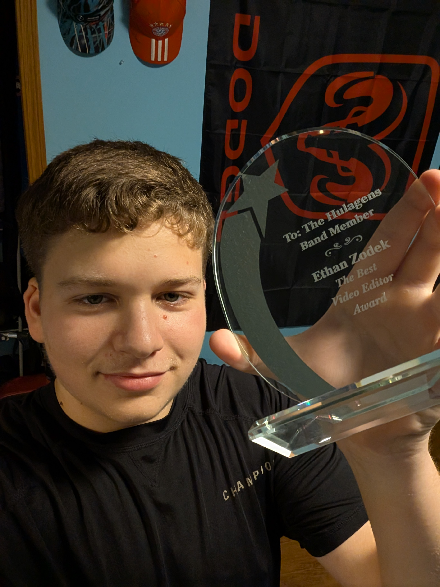

Welcome to @OUT.OF.FOCUS Photography
Capturing life's moments, one photo at a time.
View My WorkAbout Me

Hello! I'm Ethan, a passionate photographer with a love for capturing the essence of life's moments. Whether it's a candid portrait, a breathtaking landscape, or a special event, I strive to bring each moment to life through my lens. My journey as a photographer has been an exciting one, and I am always exploring new ways to push my creative limits. I'm here to help you create lasting memories, one photograph at a time.